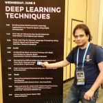

NALU(unidad aritmetica lógica neuronal) – Su razón de ser

Ing. Luis Fernando Leal
wichofer89@gmail.com
Invitado especial
Palabras clave: NALU, inteligencía artificial, Memorización en IA
Este post planeo dividirlo en 2 partes ,1(el actual) explicando las motivaciones de NALU y el problema que busca resolver y en el próximo un poco mas de detalles técnicos , explicación del modelo , código de mi propia implementación del modelo(los autores solo publicaron las especificaciones, pero no su código) y resultados de algunos de mis experimentos.
NALU es un nuevo modelo propuesto por Google DeepMind, siendo su autor principal Andrew Trask(autor del libro “Grokking Deep Learning”) y publicado apenas hace 2 semanas(agosto 2018) como artículo de investigación científica en arxiv https://arxiv.org/pdf/1808.00508v1.pdf
NALU busca mejorar el rendimiento de los modelos de redes neuronales y abrir la puerta a nuevos modelos y nuevas aplicaciones no antes posibles ya que busca solucionar un importante problema presente en las redes neuronales : falta de razonamiento cuantitativo y la habilidad de extrapolar y generalizar
La habilidad de representar y manipular cantidades numéricas esta presente en muchas especies, no solo en los humanos, por ejemplo hay fuerte evidencia que indica que las abejas tienen la habilidad de contar objetos y razonar sobre cantidades numéricas, esto sugiere que la habilidad de representar y manipular cantidades numéricas es un componente inherente de la inteligencia biológica,entonces la pregunta es : ¿posee la inteligencia artificial actual esta habilidad? La respuesta lamentablemente es NO, las redes neuronales actualmente no poseen la habilidad de “razonar” cuantitativamente y manipular cantidades numericas de manera sistematica y generalizada.
Alguien con conocimiento del tema puede leer la ultima frase y decir : “esto no es cierto, todo lo contrario de hecho las redes neuronales solo trabajan con números y todo tipo de información que se les alimente debe primero ser convertida a números”,y aun que esto es cierto con algunos ejemplos y analogías quedará mas claro cual es el problema que NALU busca resolver, empecemos entonces con una analogía con el aprendizaje humano:
Aprendizaje vs memorización
Durante mi tiempo de estudiante en ingeniería adopte por gusto y desición propia como método de estudio de matemáticas el realizar todos los ejercicios contenidos en el libro utilizado como material del curso,esto me consumía bastante tiempo por lo que algunos de mis amigos y compañeros sugerían “no, para ganar el curso solo es necesario aprender los ejemplos vistos en clase y la tarea preparatoria” lo cual obviamente consumía bastante menos tiempo ,muchas veces en los examenes solo venian estos ejemplos o pequeñas variaciones de los mismos, por lo que memorizarlos garantizaba ganar el curso, pero ¿es esto aprendizaje? En otros casos los problemas si eran diferentes y se necesitaba aplicar razonamiento y uso de los conceptos para poderse resolver y esto provocaba que algunos compañeros que preferían el método rápido(memorización) fallaran al no poder generalizar o extrapolar .
Este ejemplo sugiere que los humanos podemos tanto aprender como memorizar (y algo mas interesante aún es que tenemos el poder de decicir cual de las 2 cosas hacer,pero ese es otro tema) lamentablemente la IA a través de redes neuronales actualmente esta mas cerca del caso 2(memorizar) que del 1(aprender de manera general).
Memorización en IA
La IA a través de redes neuronales ha logrado resultados impresionantes en complejas tareas como:
Reconocimiento de voz y lenguaje natural
Diagnostico y detección de enfermedades
Vencer a campeones del mundo en juegos de mesa
Reconocimiento facial
etc
Pero tiene dificultades en tareas mucho mas sencillas como:
Contar números
Aplicar aritmética simple(suma,resta, multiplicación ,división)
Es decir tareas que implican razonamiento numérico ,algo básico de nuestra inteligencia(y de otras especies),por ejemplo cuando nosotros aprendemos a sumar, nuestro cerebro maneja de manera abstracta y conceptual los números y la operación de suma en estos, no memorizamos cual es la suma para cada posible par de números en la recta númerica(sería imposible) .
Algunos estudiosos de neurociencias y el cerebro proponen que esto es posible gracias a un tipo especial de neurona llamada “numeron”(por “numerical neuron”) las cuales se encargan de crear las representaciones numéricas que nuestro cerebro usa y proponen que todo razonamiento numérico y operaciones con numeros se basa en operaciones de acumulación(suma y resta) de cantidades(para mayor detalle ver : The Number Sense: How the Mind Creates Mathematics de Stanislas Dehaene), en el siguiente post veremos como este modelo se refleja directamente en NALU
Otros ejemplos donde es posible ver este problema en la IA son los siguientes casos:
Las redes neuronales son muy buenas aprendiendo funciones f(x) pero tienen dificultad en arender la sencilla función “identidad escalar”, es decir f(x) = x para valores de “x” que no ven durante su entrenamiento.
Las redes neuronales en algunos casos pareciera que han aprendido aritmetica basica, por ejemplo aprenden a sumar correctamente pero solo lo hacen bien en el rango de valores vistos durante su entrenamiento(por ejemplo si durante su entrenamiento ven valores en el rango de 0 a 100, podrán sumar bien nuevos valores en ese rango,pero no lo harán bien con valores como 101 + 200) por lo cual decimos que no pueden extrapolar a rangos de valores no vistos durante su entrenamiento.
Tuve la oportunidad de “chatear” con el autor del modelo quien en sus propias palabras explica otro ejemplo donde se entrena a una red neuronal para contar hasta cierto numero, pero una vez entrenada tiene dificultades para contar hasta un numero mayor a los observados, esto sería el equivalente a un humano contando muchas veces de uno a 10, pero luego tener dificultades contando hasta 11.
 Imagen 1 del artículo original: credito a DeepMind (descripción abajo)
Imagen 1 del artículo original: credito a DeepMind (descripción abajo)
Imagen 1 del artículo original: en esta imagen se prueban diversas funciones de activación en un autoencoder aproximando la función identidad escalar f(x) = x , cada curva pertenece a una función de activación, el eje "x" corresponde a los valores de entrada "x" y el eje "y" corresponde al error obtenido, es posible ver que para algunos casos pasa en menor medida que otros,pero en todos los casos el error incrementa cuando se sale del rango de valores "x" vistos durante el entrenamiento (aproximadamente -5 a 5)
El autor explica que la hipótesis bajo la cual se desarrolló este proyecto de investigación fue que las redes neuronales aprenden a representar números(y las operaciones con estos) de la misma manera (o similar) a como aprenden a manipular palabras, es decir: creando un diccionario finito lo cual es una limitación en operaciones numéricas si tomamos en cuenta que en la recta numérica existen infinitos valores y simplemente no podemos representar un diccionario de infinitos elementos en una red neuronal(y aun que pudieramos, ¿sería esto realmente inteligencia?) lo cual limita a la IA actual en extrapolar funciones a rangos de valores no vistos previamente (similar al ejemplo de memorización vs aprendizaje)
El objetivo del proyecto era proponer una nueva arquitectura que solventara estas limitantes y permitiera enriquecer a los modelos convencionales (redes feed-forward , convolucionales, recurrentes, etc) extendiendo su habilidad de extrapolar y generalizar en rangos de valores númericos nunca antes vistos…y lo lograron .
Aun que NALU tiene un potencial muy grande y creo que será una herramienta importante para todo AI developer, lo que mas me ha gustado es que ha abierto las puertas para nuevos modelos y arquitecturas demostrando que es posible aplicar una estrategia de diseño en la que se agregan a redes neuronales sub-elementos que buscan resolver ciertas dificultades y aplicar de manera efectiva sub-funciones matemáticas (en este caso aritmetica)
En el próximo post escribiré un poco mas de los detalles técnicos de NALU y mi experiencia en su implementación , y el experimento en el cual apliqué NALU.
De manera anticipada , en el experimento en el cual he aplicado NALU
hasta el momento se busca responder la pregunta “¿puede una red neuronal aprender a restar numeros seleccionados aleatoriamente en un vector de entrada x?”, mis experimentos parecen indicar que sí y tal como los autores de NALU buscaban, intente lograrlo en rangos de valores nunca vistos durante el entrenamiento. En el próximo post pondré detalles de este experimento(así como codigo del mismo)
Espero con este post explicar un poco mas claro la necesidad y problema que NALU busca resolver ya que muchas veces una publicacion científica es un poco difícil de digerir y con mucha notación matemática y mas aún en latinoamérica donde nuestro idioma nativo no es el ingles,por lo que espero que este artículo sea útil para personas buscando información un poco mas digerible del tema y en su lenguaje nativo.
Articulo publicado en: